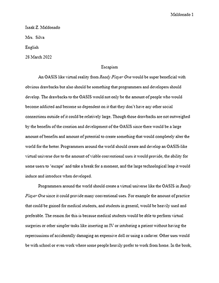

Click images to open site

One of the many assignments that I worked on was an essay discussing how technology in the book Ready Player One, by Ernest Cline, would be a way to escape from the real-world. Within the story, the main technology is a hyper realistic virtual reality, called the OASIS, and within the OASIS there is a virtual universe spanning about 30 light years long, with an enormous amount of users.
For the essay, the prompt read as follows: “Escapism is an important theme in Ernest Cline's Ready Player One. Consider both the benefits and the drawbacks of escapism in the novel. Should programmers around the world develop an Oasis-like virtual world? Why or why not?”. So with that prompt I felt like it was right to not only discuss some other views on the topic on why it could be bad or good.
With the prompt I presented I had many successes and challenges, for example when writing out the essay I felt like there were moments where I had to locate and cite information from the text. This wasn't difficult as it was more tedious than anything since I had to try to remember some of the text and where in the book that the evidence would lie. Scouring through the text was probably one of the largest challenges and then on top of that there was the grammar, and making sure that my grammar was correct and up to par with my current level of writing. For my successes I was already familiar with the Google Docs so when writing the essay I knew most of the features' uses and when I would want to use them.
Even though the writing process was difficult for me, I used CART's Habits of Mind's “Persist” since it more or less paved the way for my attitude towards writing the essay. I was able to just push myself to continue typing and locating information so that my essay would not only be up to par with the curriculum but also for my high standards for myself.